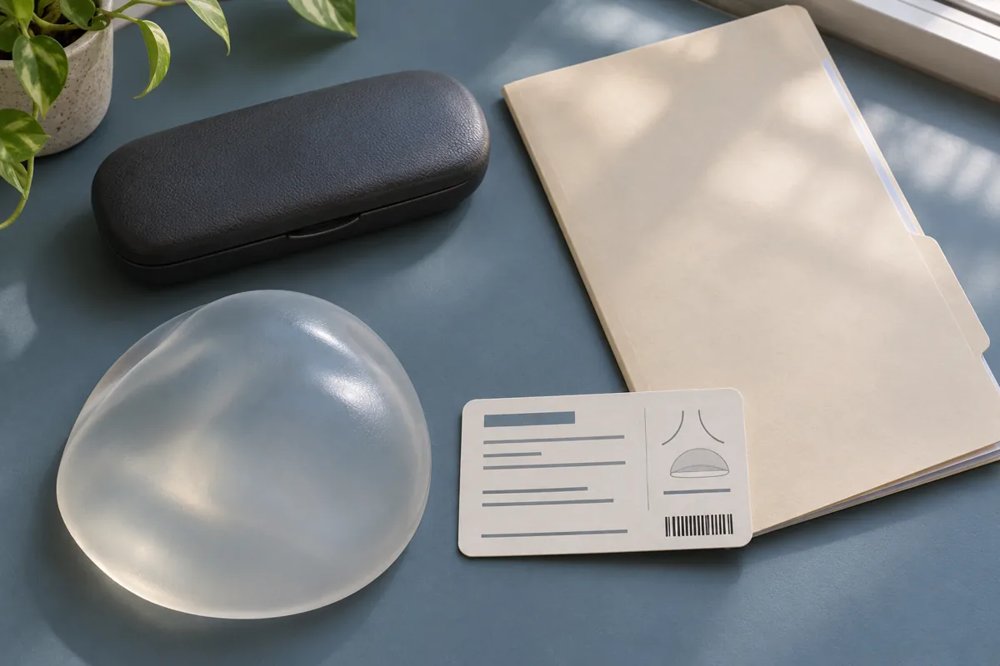

Two stickers in an envelope
After breast surgery in Türkiye, a patient opens her discharge folder at home. Inside are two adhesive labels, a receipt showing a single package price and a leaflet describing several sizes of implant. Her new clinician asks which device was placed on each side. The labels look similar and neither identifies her. Where should she begin? Ask the hospital that performed the operation for the patient-specific implant card and the operative record linking each device to its position. Keep the loose labels in their original condition while the hospital checks.
An implant card is a means of identifying a device after it has left its packaging. That information can help a professional locate the right manufacturer's instructions, match a safety notice or prepare for a later consultation. Knowing the brand alone can leave several product families in play. Conversely, a perfectly legible serial number does not explain why a particular implant was chosen, how the operation went or what is causing discomfort. The clinical record and the device identification answer different questions. Medical device liability glossary
What Türkiye’s device regulation provides
Article 18 of the Turkish Medical Device Regulation sets out information the manufacturer must supply with a covered implantable device. It includes identifying details and information about relevant warnings, precautions, expected device lifetime and necessary follow-up. The institution that implanted it must provide the patient with the card bearing their identity and make the related information readily accessible. The wording provides for Turkish and, where necessary, English, in language understandable to a layperson. Ask for both the identification card and the accompanying patient information. They may arrive in different formats. Turkish Medical Device Regulation, Article 18
The regulation excludes certain devices from those particular obligations. Examples include sutures, staples, dental crowns and screws. The clinic may have used an excluded item during the same operation as a covered breast implant. A request for an implant card for each breast prosthesis is therefore more precise than a demand for a separate card for every material in the theatre. If an older operation or a device under transitional arrangements is involved, ask the institution to identify the applicable product documentation and regulatory position at the date concerned.
Read the identifiers without filling in the blanks
Start with the manufacturer and model, then locate the lot or batch, serial number and unique device identifier, often abbreviated UDI. A lot can cover a production batch, whereas a serial number generally distinguishes an individual unit. Preserve whatever fields the actual label supplies. A catalogue reference, product volume, projection profile and manufacturing code may sit close together. Do not enter a number into an empty serial field simply because it has the right length. Ask the provider to label uncertain entries in its reply. Implant card guidance, illustrated examples and field descriptions
Imagine two implants with the same brand, volume and shape. One sticker has a faint final character. Under a ceiling light it resembles the letter O; under daylight it looks like zero. Photograph the whole label and send that image through the hospital's approved channel. In your covering note, identify the uncertain character rather than correcting it yourself. Ask staff to check the original theatre inventory or scanned label. A clean transcription from a later email may contain exactly the same mistake as the first one.
The patient identification, facility and date also matter. A replacement card might display a married surname while the admission register uses a former one. Supply the name used at surgery and a patient or encounter reference where available. Ask which identifier staff need to authenticate you before sending a passport scan. The aim is to connect the two records accurately while disclosing only the personal information the authorised office actually needs. Requesting hospital records as an international patient
Match right and left using the operation record
Consider a patient who received implants of unequal volume to address a difference in anatomy. Months later she finds a label from a consultation next to two labels in her discharge packet. It would be easy to assume that the largest number belongs to the fuller side. Appearance after surgery cannot establish that allocation. Ask for a written mapping of right and left using the surgeon's operative documentation and the facility's traceability records. Keep an unmatched item marked as unconfirmed until someone with access to the source can resolve it.
Revision surgery introduces another dimension. Which label belongs to the implant inserted years ago, which to the one subsequently removed, and which to the current device? Make a timeline with one row for each operation. Add the city, facility, side, whether the device was placed or removed, and the supporting document. A report describing an old implant observed during surgery establishes something different from a sticker attached to a proposed replacement. Leave the final column empty until the hospital confirms what actually happened. Breast augmentation and implant-related records
Ask the people who can find the missing card
Direct the request to the operating hospital's medical records office or patient liaison unit. A booking agency may help locate an official contact but may never have held the theatre log. A private consulting room may maintain correspondence while the hospital retains the implant labels. Give each recipient a focused question. For the clinic, ask where the operation was performed and under which admission reference. For the hospital, ask who can supply the card, identify each implanted device and provide the associated patient information.
An example message would read: I underwent bilateral breast implant surgery at your facility on the date shown in my discharge letter. My folder contains two loose product stickers. Please advise how I can receive the completed implant card or a verified replacement, the operative record identifying the device on each side and the manufacturer's information intended for the patient. Please tell me how to verify my identity and how you will deliver the documents securely. If one item cannot be supplied, please identify which item and what information you were able to check.
Keep the original request and an acknowledgement showing the receiving department. If a receptionist replies with a brochure, thank them and explain what remains outstanding. A brochure describing an entire product range cannot tell a clinician which model was implanted in March. Asking specifically for the entry connecting your admission to a device can save several rounds of correspondence. Where a reply comes by telephone, note the person's name and role and ask for confirmation in writing. If a clinic has moved or changed its company name, trace the facility using the original paperwork. Finding the record holder after a clinic changes name
Give your next clinician a usable copy
For a follow-up appointment abroad, put the card and the relevant operative pages first. Include the manufacturer's patient leaflet if you have it. A one-page covering note can list the devices by side and explain which entries remain provisional. Bring the originals if practical and provide copies through a channel the receiving practice accepts. In particular, a pasted image inside a word-processing document may become unreadable after automatic compression. Ask the practice to confirm that the small print and barcode can actually be read.
A radiology appointment offers a concrete example. Tell the imaging team in advance that you have implants and provide the available identifiers when requested. The team can then determine whether it needs additional information from the manufacturer or surgeon about the planned examination. A card kept in a handbag is little help if the clinic only learns about it after you arrive. Avoid interpreting a generic compatibility symbol as personal clearance for a particular examination. The professionals arranging it need the relevant device information and your clinical circumstances.
For an unexpected medical problem, seeking care takes priority over completing a file. If you have only a photograph of one sticker, take that and tell the treating team exactly what it shows. The hospital in Türkiye can be contacted afterwards for a better copy. A person experiencing new symptoms should obtain advice appropriate to the urgency through local healthcare services. This guide addresses document identification and cannot determine the cause of symptoms or the suitability of an examination.
Check whether a product notice actually applies
Suppose you see a social media post saying that a brand has announced a recall. Save the notice and establish its origin before drawing conclusions. Find the manufacturer's official communication or the competent regulator's publication. Compare the product family, reference, lot range, country coverage and issue date against your documents. A headline may name a whole company when the underlying notice concerns a narrow production interval or an accessory. Ask your clinician to interpret the manufacturer's recommended action for your specific case.
A patient might see an apparently matching model while the serial prefix is different. Another might recognise the batch but have had that particular implant removed in a later procedure. Show the discrepancy to the professional carrying out the comparison. Preserve the dated notice alongside the response and record whether the hospital verified the match. Do not infer from silence that the product is affected or cleared. If the notice cannot be reconciled with the card, ask which missing field would settle the question. Targeted questions help prevent unnecessary alarm as well as missed follow-up.
Build a file that survives a move
A wallet card can fade, tear at a corner or be lost during a change of address. Photograph the front and back in diffuse light against a matt background. Keep the edges visible and avoid reflections from a plastic sleeve. Check the image at full magnification before putting the card away. Save an unedited original, a readable working copy and any accompanying letter. A filename containing an operation date and side can distinguish two images, provided the side has been established from a reliable record.
Consider what happens if a family member helps organise papers. A partner might put every breast-related document into one envelope, mixing a garment warranty, an estimate, anaesthesia instructions and implant labels. Sort the documents by purpose. Keep the manufacturer's warranty terms with purchase and registration material, the implant identification with clinical records, and financial receipts in a separate section. Registration with a commercial warranty programme may serve a financial purpose. It cannot supply a missing account of what happened in theatre. Store a backup where you can retrieve it after moving cities or changing email providers.
Prepare an independent review when the accounts conflict
A mismatch does not establish who made an error or whether it harmed anybody. A hospital may locate a contemporaneous inventory entry, a surgeon may explain a documented change during an operation, or the original card itself may contain a transcription error. Keep conflicting versions side by side and ask the institution for a dated clarification identifying the source used. Avoid overwriting a disputed field with a preferred answer. A specialist can then distinguish an administrative discrepancy from a clinical question requiring further investigation. How to prepare for an independent medical review
A useful final check is to imagine handing the folder to someone who has never met you. Could they identify the surgery date, the treating institution and each current implant? Could they tell which numbers were verified, what remains uncertain and whom to contact? If so, the file can support follow-up without forcing you to narrate years of treatment from memory. If one answer is missing, write that question on the first page. The next conversation can then start with a specific request instead of another search through disconnected scraps of paper.
When a scan loses a crucial detail
A surprising amount of information can disappear between a hospital scanner and a patient's inbox. A monochrome setting can merge adjacent bars, a photocopier can cut off a narrow margin and automatic contrast can erase pale ink on thermal labels. If a character is illegible, ask for a fresh scan from the original sheet at a resolution that preserves fine detail. Specify which corner is blurred. A general request for better paperwork may simply produce the same attachment again. If an embossed line is difficult to capture, ask the records officer to transcribe it separately and preserve the image for comparison.
Translations present a related problem. A translator can explain headings, symbols and descriptive terms, but a device reference normally needs to travel unchanged. A slash, hyphen, leading zero or suffix may distinguish closely related variants. Keep the original beside the translation, identify the issuing organisation and date each version. If the manufacturer offers a leaflet in your language, compare its edition and exact model designation against the document the hospital supplied. Bring unresolved differences to your appointment. A short, clearly marked uncertainty is easier to investigate than a polished translation that disguises an assumption.
Discuss your situation
Share a brief outline with our legal team. Please do not send full medical records or identity documents in the initial enquiry.